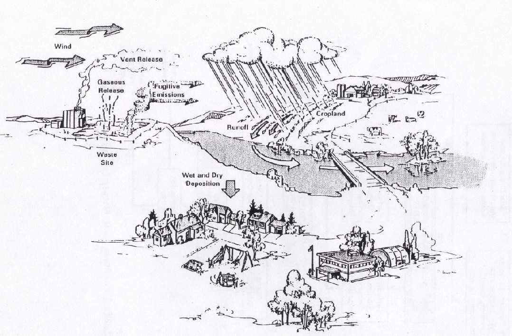

1.0 ATMOSPHERIC PATHWAY
Pacific Northwest National Laboratory (PNNL) prepared this report for the
U.S. Department of Energy (DOE). This report describes the atmospheric
pathway component of the Multimedia Environmental Pollutant Assessment
System (MEPAS), including the purpose and use of the component's modules
and formulations. This document replaces earlier MEPAS formulation documents
(Whelan et al. 1987; Droppo et al. 1989). The atmospheric pathway component
modules, formulations, and rationale are discussed in the following sections:
- emission characterization, including particle suspension and volatilization
- contaminant transport, dispersion, and deposition, including dispersion coefficients
- initial source dispersion, including point and area sources, wind conditions, radioactive decay, chemical reactions, wet and dry deposition, source mass budget, and plume rise
- air-as-source, short-distance, disperse-regional-release, and complex terrain modules.
The
atmospheric pathway component of MEPAS estimates the pollutant exposures
from atmospheric emissions to a regional human population. Long-term, average
contaminant levels are computed using standard computation techniques for
locations defined in terms of a direction and distance from the site. Using
these methods, estimates of contaminant levels for exposure assessment
can be made for both population centers and less populated rural areas.
Short-term normalized air concentrations are provided for evaluation of
acute exposures at nearby location
1.1 LONG-TERM AVERAGE EXPOSURE
The long-term average exposure in the atmospheric pathway, based on a 70-year
increment (i.e., approximately one human life span), represents the sum
of exposures from individual atmospheric plumes. The travel time between
release and exposure for these individual plumes is typically expressed
in hours and minutes. Therefore, relatively short-term processes need to
be incorporated into the computation of long-term, average concentrations.
Modeling the long-term, average exposures to pollutants in the atmospheric
pathway involves a weighted summation of exposures computed for a matrix
of cases spanning ranges of ambient atmospheric conditions. The average
conditions over the 70-year exposure period are represented by climatological
data summaries (i.e., average frequency of occurrence of the various combinations
of ambient atmospheric conditions) from a source such as the U.S. National
Weather Service
1.2 SHORT-TERM AVERAGE EXPOSURE
The short-term exposure to pollutants in the atmospheric pathway is based
on maximum hourly concentrations. For a near-ground-level release, the
95% and 50% normalized air concentrations at 100 m from the release are
provided. For all types of atmospheric releases, the maximum hourly normalized
air concentration and its location are provided for each of the 16 direction
sectors.
1.3 ATMOSPHERIC PROCESSES
The fate of a contaminant released to the atmosphere depends on a number
of complex processes including release mechanisms and characteristics,
dilution and transport, chemical reactions, washout by cloud droplets and
precipitation, and deposition onto the underlying surface cover. The MEPAS
atmospheric pathway model accounts for each of these processes in computing
long-term exposures. A schematic diagram illustrating the atmospheric pathway
is presented in Figure 1.1.
The atmospheric pathway for pollutants considers contaminant air concentrations
and deposited surface concentrations. Air concentrations are needed for
inhalation pathways. Surface concentrations resulting from dry and wet
removal processes are needed for overland transport and for ingestion pathways
for pollutants.
The atmospheric pathway has several sequential components: suspension/emission,
atmospheric transport and dispersion, and wet and dry deposition. The relationship
of these atmospheric components in the MEPAS model is shown in Figure 1.2.
If using a MEPAS emission module, site-specific data are

FIGURE 1.1. Schematic Diagram Illustrating the Atmospheric Environment

FIGURE 1.2 Atmospheric Pathway Computation Diagram
needed to estimate the gaseous and particulate
release rates. An atmospheric transport and dispersion model is used to
compute downwind air concentrations. As the plume travels away from a site,
these airborne concentrations are reduced both by dispersion and deposition
processes. Wet- and dry deposition models are used to compute the total
deposition to the surface. These atmospheric pathway components maximize
the validity of comparisons of environmental trends between sites by being
based on empirical relationships that incorporate site characteristics
(i.e., location, surface cover, climatology).
The prediction of contaminant movement through the atmospheric pathway
uses algorithms that address atmospheric suspension/emission of contaminants
at a site and the subsequent transport, diffusion, and deposition of these
airborne contaminants. Input to the model includes site-specific climatological
information such as wind speed and direction, stability, and precipitation.
Output from the model consists of average air and surface contaminant levels
that are used in both the inhalation and ingestion components of the exposure
assessment analysis. The computed surface contaminant levels also can be
input to the overland transport components of MEPAS as a separate analysis
run.